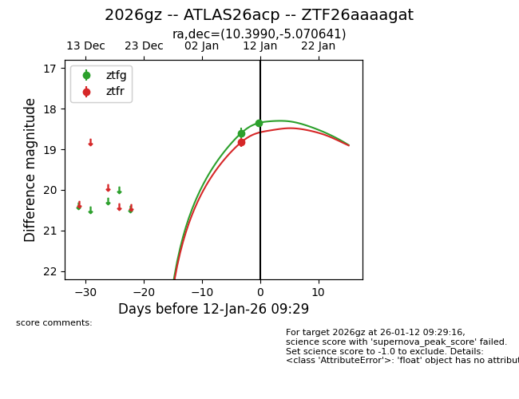
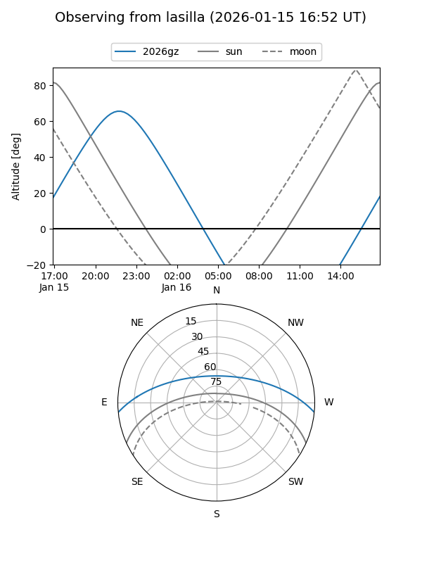
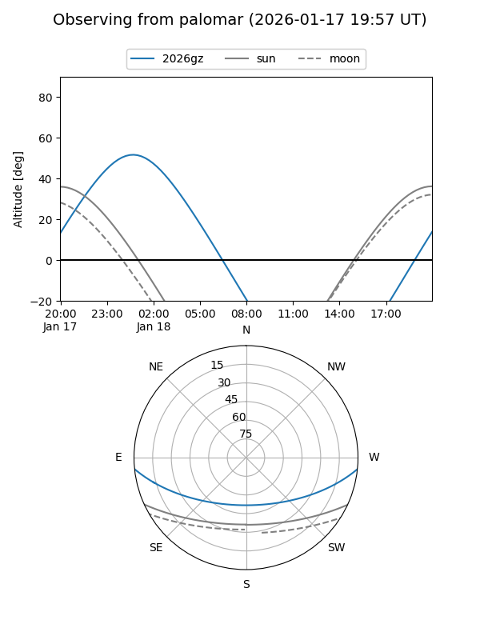
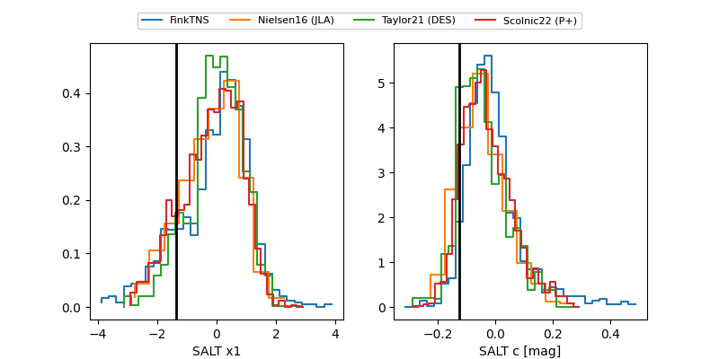

2026gz
Target 2026gz at 2026-01-18 19:30
Aliases and brokers:
FINK: link
Lasair: link
ALeRCE: link
TNS: link
YSE: link
alt names
ZTF26aaaagat (ztf,fink_ztf)
2026gz (tns,yse)
ATLAS26acp (atlas)
Coordinates:
equatorial (ra, dec) = 10.3990,-5.07064
equatorial (HMS+DMS) = 00:41:35.76,-05:04:14.31
galactic (l, b) = (116.4285,-67.81803)
Flags:
Photometry:
last ztfg=18.22, ztfr=18.31
4 ztfg, 4 ztfr detections
Lightcurve

Visibility


Additional plots
